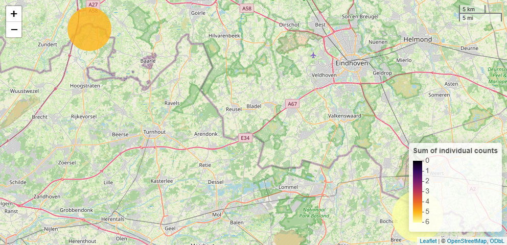

camtraptor is an R package to explore and visualize Camera Trap Data Packages (Camtrap DP). It offers a step-by-step workflow to read Camtrap DP files, filter data of interest, summarize information (e.g. number of observed species) and visualize this per deployment on an interactive map. You can also use it to transform data for analysis in camtrapR.
camtraptor 1.0 updates the internal data model to Camtrap DP 1.0 and drops support for Camtrap DP 0.1.6. This breaking change is accompanied by a number of other major changes. See the changelog for details.
Get started
To get started, see:
- Vignettes: tutorials showcasing functionality.
- Function reference: overview of all functions.
Installation
You can install the development version of camtraptor from GitHub with:
# install.packages("pak")
pak::pak("inbo/camtraptor")Example
Get an overview of the species detected in an example Camera Trap Data Package dataset:
library(camtraptor)
#>
#> Attaching package: 'camtraptor'
#> The following object is masked from 'package:base':
#>
#> contributors
x <- example_dataset()
taxa(x)
#> # A tibble: 10 × 5
#> scientificName taxonID taxonRank vernacularNames.eng vernacularNames.nld
#> <chr> <chr> <chr> <chr> <chr>
#> 1 Anas platyrhynchos https:/… species mallard wilde eend
#> 2 Anas strepera https:/… species gadwall krakeend
#> 3 Ardea https:/… genus great herons reigers
#> 4 Ardea cinerea https:/… species grey heron blauwe reiger
#> 5 Aves https:/… class bird sp. vogel
#> 6 Homo sapiens https:/… species human mens
#> 7 Martes foina https:/… species beech marten steenmarter
#> 8 Mustela putorius https:/… species European polecat bunzing
#> 9 Rattus norvegicus https:/… species brown rat bruine rat
#> 10 Vulpes vulpes https:/… species red fox vosFilter the observations in the dataset on female mallards (Anas platyrhynchos) and map the number of recorded individuals for each deployment location:
x %>%
filter_observations(
scientificName == "Anas platyrhynchos",
sex == "female"
) %>%
summarize_observations() %>%
map_summary(feature = "sum_count")
Relation to other R packages
- camtrapdp is a core R package to read and manipulate Camtrap DPs. camtraptor depends on camtrapdp and re-exports a number of functions so that users don’t need to load both packages.
- camtrapR is an analysis R package for camera trap data. camtraptor initially offered a number of functions to transform Camtrap DPs to outputs compatible with camtrapR. These have been superseded, because camtrapR now supports reading Camtrap DPs.
- camtrapDensity is a development R package to run single species random encounter models to estimate animal density. camtraptor is a dependency.
Meta
- We welcome contributions including bug reports.
- License: MIT
- Get citation information for camtraptor in R with
citation("camtraptor"). - Please note that this project is released with a Contributor Code of Conduct. By participating in this project you agree to abide by its terms.